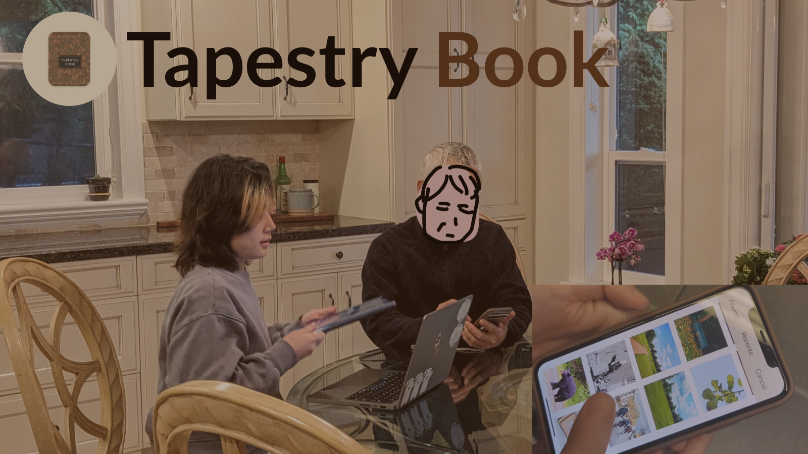
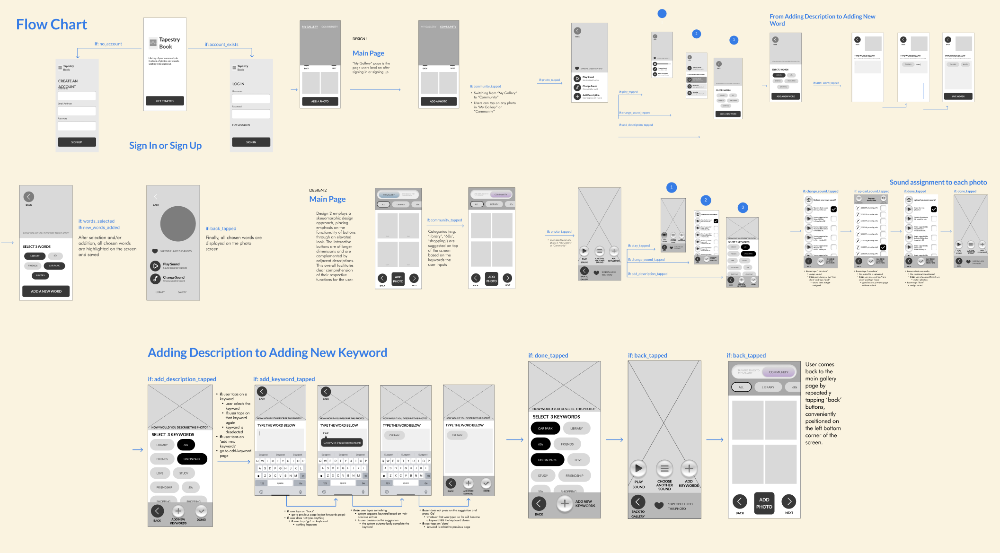
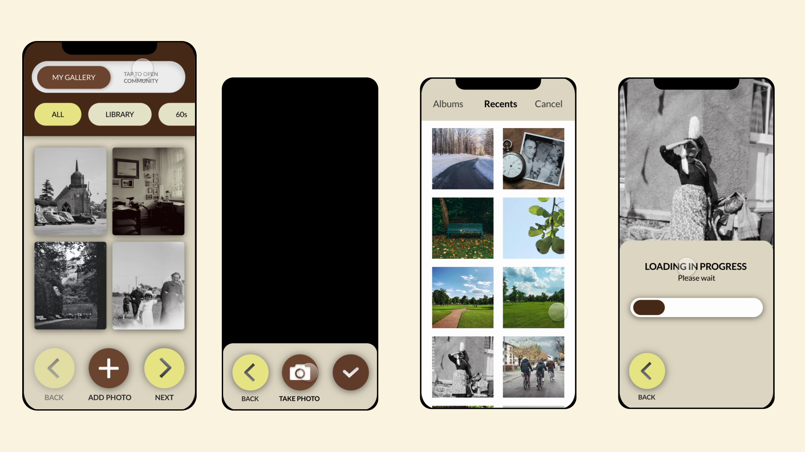
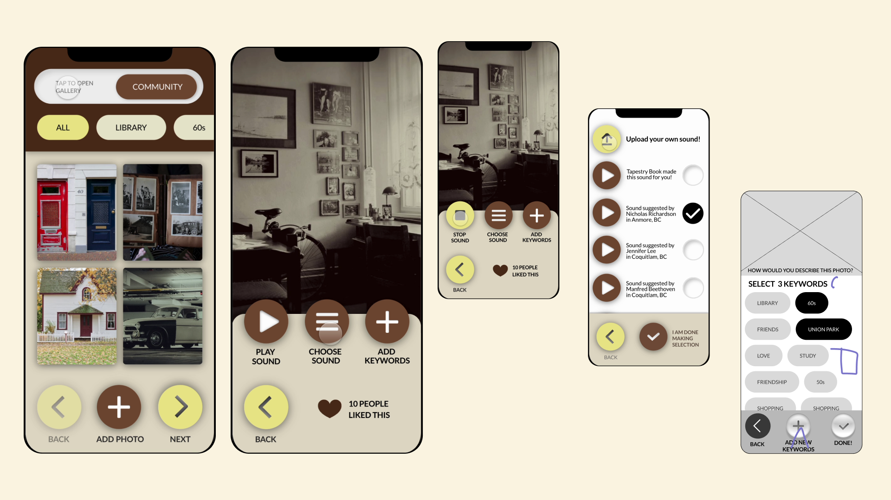
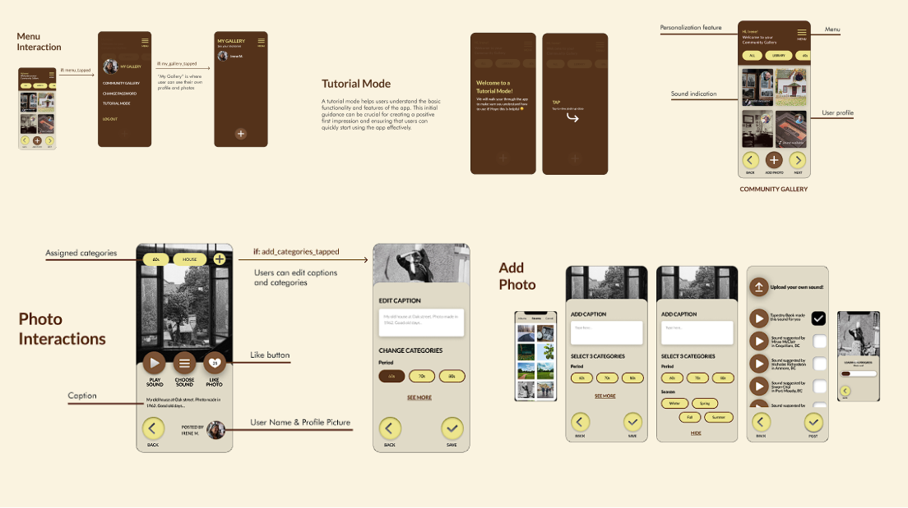
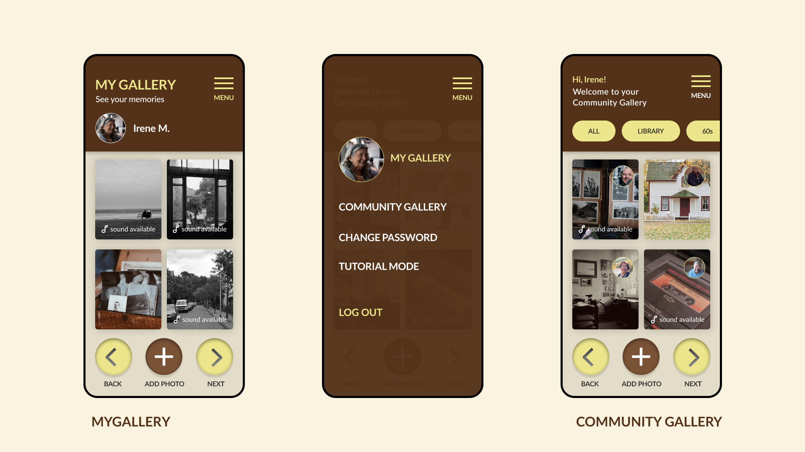
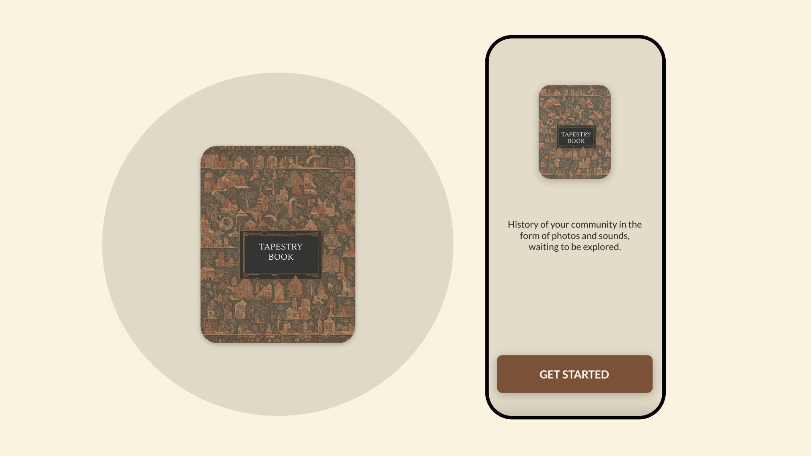
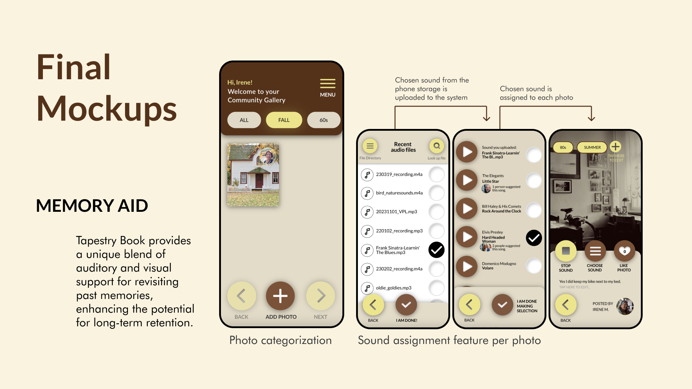
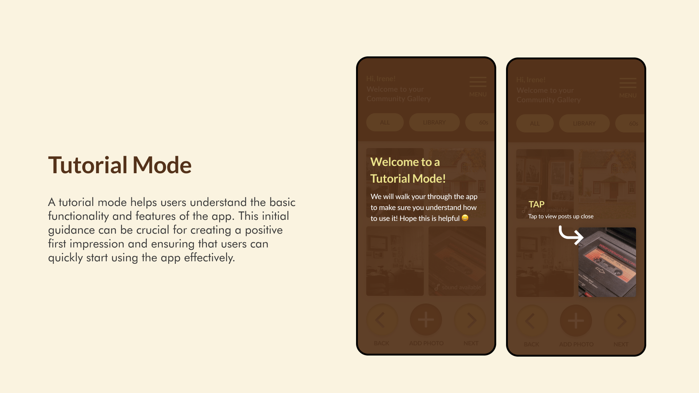

Tapestry Book App
Interaction Design/Mobile App Design
Team
Jae Eun Kim
Md Safwat Qurib Ifti
Valeriya Ten
Timeline
June 2023 - July 2023
My Role
UX Research
Logo Design
Visual Design
Wireframing
Tools
Figma
Protopie
Adobe Illustrator
Project Overview
Redefining Gallery App for Seniors
This project was completed for the Interface Design course at Simon Fraser University. Our design domain revolves around social isolation and loneliness among people within the same community or neighbourhood, especially affecting seniors over the age of 65.
Final Product
The final product includes a "Tutorial Mode","My Gallery" and "Community Gallery" and the ability to add music to your desired memorable pictures, designed in Figma and Prototyped in Protopie to help social isolation and loneliness among people within the same community or neighbourhood, especially affecting seniors over the age of 65 .
View PrototypeIntended Users
Tapestry Book Founders
My team and I wanted to design an app that benefits our elderly and after some primary research, I came up with the idea of Tapestry Book, a memory aid. The core mission of this app is to preserve precious community memories through visuals and supporting sounds . In Tapestry Book, users can share nostalgic media and historical stories, creating a rich tapestry of collective experiences. The goal is to provide seniors with an immersive journey back in time, allowing them to relive their most cherished moments with all their senses.
Design Focus
How can we develop a mobile application specifically tailored for seniors aged 65 and above, who experience social isolation due to memory-related issues, that effectively helps them feel more connected to their community?
Findings
Research Process
Based on my secondary research,I aimed to explore the factors, so my teammate Jae and I wanted to help seniors feel connected to the community, as well as the ways technology currently aids them in achieving this. To gain insights, I conducted an online survey targeting 21 individuals(mostly related to Jae's family and friends), aged 65-74 and one individual aged 75+. The results revealed that 43% of respondents, or 9 out of 21, primarily use websites to access information and services. Meanwhile, 38%, or 8 respondents, rely on social media to connect with friends and family for similar purposes.These findings highlight the importance of accessible digital platforms for seniors in maintaining their social connections and accessing vital information.
Additionally, the survey revealed that 52% of respondents, equating to 11 out of 21 participants, expressed concerns about data privacy when using digital technology or apps for social interaction. This indicates a need for secure and trustworthy digital solutions. The survey also identified common themes motivating seniors to participate in group activities, including shared interests and hobbies, consistent and regular communication, and fostering friendships. These insights are crucial for designing a mobile application that not only addresses the social needs of seniors but also ensures their comfort and security when using digital tools.
Content Strategy
As a starting point, I suggested building a sitemap to visualize our app structure. This approach helped us narrow down the things that is applicable within our time and also provided us a structure of how we want our app to look.
Sitemap
After you download the app, you make an account and then in the hamburger menu you will come across "My Gallery" where you can share your own pictures and keep it private. Another option called the "Community Gallery" allows you to connect to people within your neighbourhood by looking up images and liking and commenting on them. It also allows you to share your images to the community. Aside from that you are allowed to select songs from a playlist that aligns with a picture of your liking to commemorate that particular moment in the near future. Tapestry book is like a phone book that allows you to connect to your peers but also keep things private to yourself when you feel like it.
First Iteration
Mockups
During the initial design process, I collaborated with my teammate, Valeriya Ten, to create the first mockup iterations for the Gallery and Community Gallery.
Tapestry Book - My Gallery
Tapestry Book- Communtiy Gallery
Post-Critique Feedback
Challenge
"Our teaching team observed that the initial mockups didn't include sufficient interactive elements, which could result in users not engaging actively with the app, potentially affecting user retention. Additionally, they noted that the app might be unclear to new users, as it doesn't provide clear guidance or onboarding instructions on navigating the app or what steps to take after creating an account."
Design
Design Interactions
Design Interactions Updated
After discussing the feedback with the team,we have made several interface improvements to enhance user engagement and streamline the experience To help new users, I came up with the tutorial mode that provides an overview of the app's basic functionalities. I added the photo interactions which have been enriched with options to edit captions, assign predefined categories like "Period" and "Season," and add audio suggestions based on these categories, enhancing the thematic experience. Additionally, users can see their name and profile picture alongside each post, and like buttons are now available for engagement.,Jae worked on the The Community page which is now the main landing page, replacing the toggle functionality, which promotes active participation. Valeriya worked on The "My Gallery" section, accessible through the menu, allows users to view and manage their profiles and photos. During our design process, I also selected the colour scheme and typeface based on our research and the overall feel we wanted to achieve. I chose Lato as one of the main typefaces as it brings a unique character through imperfections and stands out with its quirky charm.
Final Mockups
Landing Page
As a team, we collaborated on the final prototype on Protopie, we split up the tasks revising the initial version to update the new features. This was achieved by incorporating a hamburger menu bar when the user logs in and allows them to choose either Community Gallery, My Gallery or Tutorial Mode.In the Community Gallery we added the feature which allows user to browse, sort, and interact with photos. This platform enables users to connect by comparing memories and adding sounds to photos, enhancing both auditory and visual memory aids. The interface includes personalization features, allowing users to upload photos, categorize them, and add descriptions and sounds in a single step. To ensure accessibility, the design features large, clear buttons and a tutorial mode that guides users through the app's functionalities, making it easy for them to navigate and engage with the community. I was in charge of designing the logo, which reflects Tapestry Book's focus on shared memories. I developed the tutorial mode to provide clear guidance for users and managed the integration of music in the gallery, allowing users to enhance their photos with sounds. These contributions were essential in improving the app's overall functionality and user engagement. Now, we highlight the key features added in the final product that significantly enhanced its overall appeal and functionality. These enhancements have not only enriched the user experience but also ensured that Tapestry Book meets the diverse needs of its audience, creating a more engaging and accessible platform.
  Tutorial Mode
The Tuorial Mode is designed to help users grasp the basic functionalities and features of the app. It provides essential guidance on navigating to "My Gallery," where users can add picturesand then a pick music or sound that relates to that picture and save it in that section. Additionally, the tutorial demonstrates how to return to the "Community Gallery," allowing users to view other people's profiles and engage with the broader community. This initial guidance is key to making a positive first impression and enabling users to start using the app efficiently and confidently.
Takeaways
What Did I Learn?
This project provided me with valuable insights into the perspectives of seniors, particularly those aged 60 and above. It challenged my assumptions about design aesthetics, especially with the use of skeuomorphic elements, which are often seen as outdated in contemporary design. Surprisingly, our senior participants found these familiar, real-world inspired designs intuitive and user-friendly, highlighting the importance of considering the generational experiences of the user base.
However, we encountered challenges regarding cognitive load. Despite our efforts to simplify navigation with linear scene transitions, some participants found the app's steps unnecessarily complex. This experience underscored the necessity of balancing functional complexity with simplicity in the user journey, particularly for seniors. It emphasized the need to design with a focus on streamlined functionality, ensuring that the interface remains accessible and easy to navigate, while still meeting the needs of the users. This takeaway is crucial for creating inclusive designs that cater to diverse user groups.